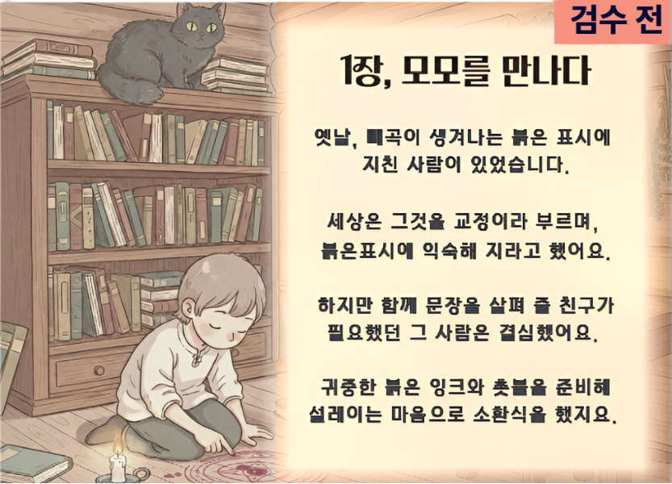

파일: public/mock/welcome-ba-stickers-mock.html · 열기: http://127.0.0.1:5173/mock/welcome-ba-stickers-mock.html · 펜 이미지: public/momo/pen_transparent.png
public/mock/welcome-ba-stickers-mock.html
public/momo/pen_transparent.png